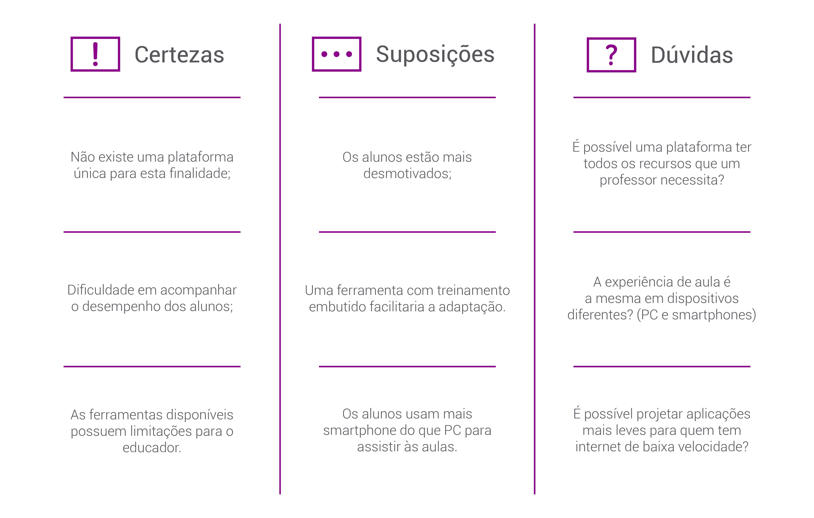

O Ínicio
A Raiz do Problema
Devido à pandemia da COVID-19, o ensino remoto foi adotado emergencialmente.
Com isso, muitos alunos e professores foram impactados.
Resolvemos então focar no professor para levantar as maiores dificuldades enfrentadas nessa
adaptação do presencial para o remoto e chegamos ao desafio:
Como podemos ajudar o professor a amenizar a transição para o EAD de forma a conseguir dar uma aula de qualidade mesmo sabendo que a falta de uma plataforma de ensino digital única pode nos prejudicar?
Matriz CSD
Com o problema definido, criamos uma Matriz CSD (Certeza, Suposições e Dúvidas), para avaliarmos e separarmos o que já era de conhecimento da equipe do que queríamos descobrir através de pesquisas.
Benchmark
Nessa etapa levantamos os principais players do mercado, seus diferenciais e deficiências.

Pesquisa e Persona
A Metodologia
A partir da Matriz CSD e do Benchmark levantado, criamos dois formulários para a pesquisa:
Qualitativa
Um roteiro de entrevista de profundidade para descobrir melhor quais são as dores dos usuários através de uma conversa profunda e significativa.
Quantitativa
Um Google Forms adaptado do roteiro de profundidade para atingir um número maior de pessoas e buscarmos respostas em números.
Dados
Gráficos criados a partir das informações coletadas através das entrevistas
Perfil dos Entrevistados
Persona
Baseado em todos os dados levantados pelas pesquisas e entrevistas, chegamos à persona que mais representa o público-alvo que queremos abordar.

Os Problemas
Jornada do Usuário

Definindo as Dificuldades
Proposta de Valor e Perfil do Cliente

Os Principais Problemas
Com base no gráfico de principais dificuldades levantado através das pesquisas e entrevistas,
desenvolvemos os canvas de Perfil do Cliente e Proposta de Valor para definir os maiores problemas
para os usuários e como o produto se proporcionaria a solucioná-los.
Decidimos então que os principais problemas a serem atacados seriam:
As Soluções
Engajamento
Para melhorar o engajamento dos alunos em sala de aula, escolhemos utilizar Metodologias Ativas que são pouco exploradas em ambientes online, com o objetivo de estimular os alunos nas aulas e aprofundar seu conhecimento.
O que são? Uma série de metodologias de ensino em que o aluno é o agente principal na construção de seu conhecimento. Em oposição às aulas tradicionais e expositivas onde o professor é quem detêm e somente repassa o conhecimento.
Como utilizamos: Estarão disponíveis modelos de metodologias ativas para os professores reproduzirem, ou se preferirem, um modelo em branco para sua própria criação.
Dificuldades na Plataforma
Para o melhor domínio da plataforma, chegamos à duas resoluções:
Tutoriais
Uma série de tutoriais em texto e vídeo para ensinar melhor sobre as funções e ferramentas do Teams.
Assistente
Para facilitar as tarefas mais comuns dos professores, como preparar uma nova atividade ou ver mensagens e dúvidas recentes.
Recursos e Ferramentas
Central de Notificações
Reúne todas as notificações em uma única janela para tornar mais prática e intuitiva a experiência de navegação.
Quiz de Metodologias
Ajuda o professor que não conhece as metodologias a escolher a melhor opção para criar uma atividade de forma mais interativa.
Métricas
Ajuda os professores a acompanhar a evolução dos alunos e status das tarefas.
Dúvidas na Atividade
Separa as dúvidas dos alunos em cada atividade, facilitando o feedback do professor.
Desenvolvendo o Protótipo
Storyboard
Ao decidir os problemas e como solucioná-los, desenvolvemos um storyboard demonstrando como o produto seria usado pela persona. A narrativa traz todo o fluxo encontrado na jornada do usuário: criar uma atividade ou aula, colocá-la em prática e analisar os resultados para melhorar continuamente a aula.
Fluxograma de Telas

A partir do storyboard com a narrativa de uso do produto, foi criado um fluxograma com as telas principais e como elas se conectam.
Com essa estrutura pronta, desenvolvemos o primeiro protótipo para testes de usabilidade.
Testes de Usabilidade
Aplicado em 6 usuários, o teste de usabilidade do protótipo trouxe feedbacks semelhantes entre si, tanto nas dificuldades quanto nos pontos fortes do produto.
Analisando os testes e as críticas, identificamos e solucionamos os seguintes problemas:
Assistente

O botão do assistente ficava muito próximo à barra de busca, confundindo alguns usuários de que eram relacionados. Para diferenciá-los, distanciamos os dois e deixamos mais evidente o botão com uma seta para "descer" ou "subir" o menu do assistente.
A parte de notificações no assistente foi alterada para deixar mais claras as informações sobre quem mandou a mensagem.
Antes o assistente somente dava a opção ao professor de criar uma atividade a partir do quiz de metodologias o que tornava o processo mais longo e pouco prático. Deixamos então a opção na mão do usuário para que ele possa decidir entre cirar uma atividade através do processo das metodologias ativas ou criar uma atividade em branco diretamente.
Atividades
Na tela de criação de atividades, houve uma dificuldade em entender o que aconteceria ao clicar em "Nova Seção". Sendo assim, modificamos seu visual para melhor entendimento.
Para ajudar ainda mais no fluxo de criação de atividades, foram inseridas mensagens de confirmação. Assim o usuário pode entender melhor que suas ações foram concluídas e como fazer os próximos passos.
Um balão de ajuda foi criado para indicar o caminho durante as primeiras vezes que usuário criar e enviar atividades.
Ouvindo o feedback dos entrevistados, adicionamos uma forma de visualizar a atividade em sua forma final, para que a vejam igual um aluno a veria.
Textos
Em outros pontos no protótipo, percebemos que a melhor forma e a mais simples seria reescrevendo alguns textos. Utilizando frases mais claras, objetivas e bem definidas, podemos passar mais informações e instruções que serão melhor absorvidas.
Todas essas mudanças podem ser encontradas na versão final do protótipo.